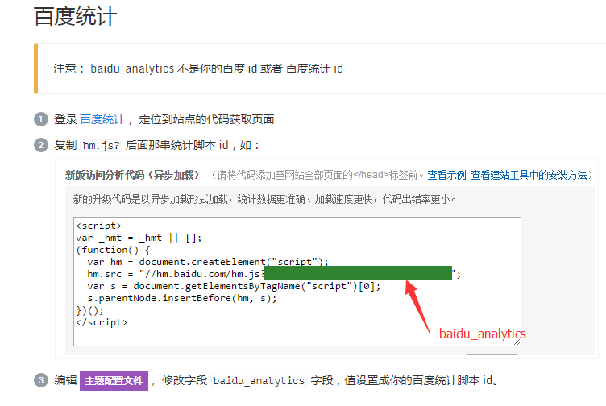
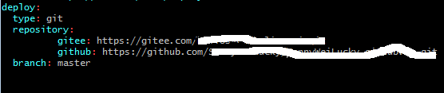

主要记录一下自己在搭建个人博客的时候，一些配置，基本上是查阅别人的文章，这里记录一下
hexo安装
next主题设置
next主题的设置都是在next/_config.yml中设置。
添加LocalSearch搜索
npm install hexo-generator-searchdb --save
编辑主题配置文件，启用本地搜素
# Local search
local_search:
enable: true
网站访问量统计

阅读次数统计
添加评论
域名申请
谷歌检索
永久文章链接
404
码云+GitHub部署

需要在站点配置文件中配置gitee和GitHub的仓库地址
然后就可以部署了，不过我们在gitee上部署后，每次都需要手动的去更新gitee page，才能生效
图片浏览放大功能fancybox
cd next/source/lib
git clone https://github.com/theme-next/theme-next-fancybox3 fancybox
#ps:注意fancybox和next/_config.uml里面的名字保持一致
更改next/_config.uml文件；
fancybox： true
文字数量和阅读时长
- 在博客目录下安装下面插件
~~~ npm install hexo-symbols-count-time --save
~~~
- 在博客站点配置文件中添加
~~~
#估算一篇文章需要阅读的时间 symbols_count_time: symbols: true time: true total_symbols: true total_time: true exclude_codeblock: false awl: 4 wpm: 275 suffix: "mins."
~~~
next7之后阅读全文设置
在博客目录下执行
npm install hexo-excerpt --save
在站点配置文件中添加
#阅读全文
excerpt:
depth: 1
excerpt_excludes: []
more_excludes: []
hideWholePostExcerpts: true
在主题配置文件中将excerpt_description改为true
添加本站运行时间
修改/blog/themes/next/layout/_partials/footer.swig文件，在末尾加入如下代码
<br />
<!-- 网站运行时间的设置 -->
<span id="timeDate">载入天数...</span>
<span id="times">载入时分秒...</span>
<script>
var now = new Date();
function createtime() {
var grt= new Date("04/21/2019 15:54:40");//此处修改你的建站时间或者网站上线时间
now.setTime(now.getTime()+250);
days = (now - grt ) / 1000 / 60 / 60 / 24; dnum = Math.floor(days);
hours = (now - grt ) / 1000 / 60 / 60 - (24 * dnum); hnum = Math.floor(hours);
if(String(hnum).length ==1 ){hnum = "0" + hnum;} minutes = (now - grt ) / 1000 /60 - (24 * 60 * dnum) - (60 * hnum);
mnum = Math.floor(minutes); if(String(mnum).length ==1 ){mnum = "0" + mnum;}
seconds = (now - grt ) / 1000 - (24 * 60 * 60 * dnum) - (60 * 60 * hnum) - (60 * mnum);
snum = Math.round(seconds); if(String(snum).length ==1 ){snum = "0" + snum;}
document.getElementById("timeDate").innerHTML = "本站已安全运行 "+dnum+" 天 ";
document.getElementById("times").innerHTML = hnum + " 小时 " + mnum + " 分 " + snum + " 秒";
}
setInterval("createtime()",250);
</script>
添加字数统计和阅读时长
在站点目录下安装
npm install hexo-symbols-count-time --save
在站点配置文件中添加配置
#估算一篇文章需要阅读的时间
symbols_count_time:
#文章内是否显示
symbols: true
time: true
# 网页底部是否显示
total_symbols: false
total_time: true
exclude_codeblock: false
awl: 4
wpm: 275
suffix: "mins."
文章加密功能
详细内容参考
在站点目录下安装
npm install --save hexo-blog-encrypt
在站点配置文件中添加
encrypt:
enable: true
abstract: 这是一篇加密文章，内容可能是个人情感宣泄或者收费技术。如果你确实想看，请与我联系。
message: 您好, 这里需要密码。
theme: Flip
wrong_pass_message: 抱歉, 这个密码看着不太对, 请再试试.
wrong_hash_message: 抱歉, 这个文章不能被校验, 不过您还是能看看解密后的内容.
然后在你的文章的头部添加上对应的字段，如 password, abstract, message
- password: 是该博客加密使用的密码
- abstract: 是该博客的摘要，会显示在博客的列表页
- message: 这个是博客查看时，密码输入框上面的描述性文字
---
title: 文章加密
date: 2019-01-04T22:20:13.000Z
category: 教程
tags:
- 博客
- Hexo
password: 123456
abstract: 密码：123456
message: 输入密码，查看文章
---
动态背景
按需选择，我选择的是canvas-ribbon，需要安装模块到theme/next/source/lib文件夹下。
cd themes/next
git clone https://github.com/theme-next/theme-next-canvas-ribbon source/lib/canvas-ribbon
Enable module in NexT _config.yml file:
canvas_ribbon:
enable: true
And, if you wants to use the CDN, then need to set:
vendors:
...
canvas_ribbon: //cdn.jsdelivr.net/gh/theme-next/theme-next-canvas-ribbon@1/canvas-ribbon.js